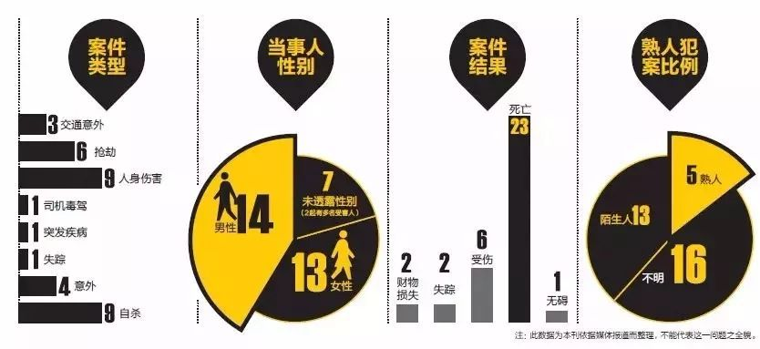
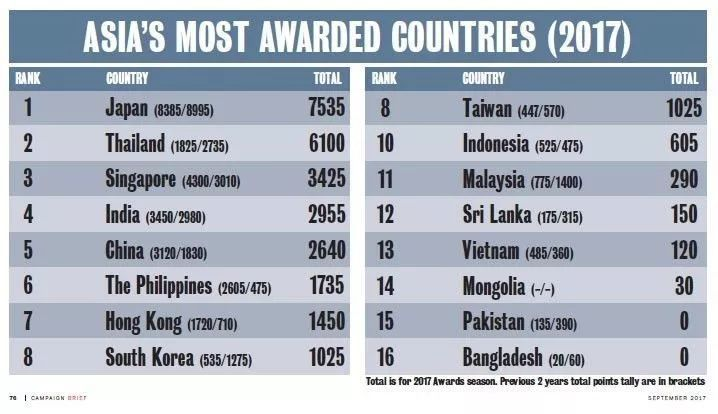

2018面对大学生就业难的另一条出路-出国深造
相信大家大部分都知道2018年以前社会上出现了一种"用人荒"的现象，不少小伙伴都对自己以后的就业有不少信心，可是明天还会如此吗？我们来分析下，我国现在处在一个"有点尬"的位置，国内有台湾问题，国外正在打中美贸易战，加上习大大提出的生态文明，就是说我们将进入一个以蓝天白云，青山绿水为目的的工作环境，势必会有一些企业面临转型或倒闭。可能还有一部分人会说，现在新媒体发展的特别好、快，可以等毕业进入新媒体公司工作，这样的话，问题就来了，据了解国家出台新的税率改革，公司每天都交那么多税，还有心思去养闲人？当然了你也不用惊慌，但是这件事做了，待你学成归来时，这种就业难的情况肯定会有所好转，你还怕找不到工作？下面我们就一起来看看国外留学这件事，用数据说话。
随着全球化的深入发展，新兴市场的不断拓展，反向留学潮苗头初显。反向留学兴起的原因之一是欧美等传统留学目的国大多面临本国学生选择去留学的数量太少，远远低于外国留学生数量。政府、高校、留学和交换生组织努力提供更多的留学选择和更好的服务吸引学生，并通过奖学金和资助转移政策减轻学生的留学成本。
从2011年不难看出我国每年的国外留学人数不停上升，其中学成归来的人数是越来越多。据教育部网站消息，2017年，中国出国留学人数首次突破60万大关，达60.84万人，同比增长11.74%，持续保持世界最大留学生生源国地位。同年留学人员回国人数较上一年增长11.19%，达到48.09万人，其中获得硕博研究生学历及博士后出站人员达到22.74万，同比增长14.90%。2017年度，我国留学生出国学习、回国服务规模双增长，与国家战略、行业需求契合度不断提升，发展态势持续向好。
留学人数增长如此之快，他们都选择去哪个国家呢？
由上图可见，大部分的留学选择还是欧美国家。为什么选欧美国家的人数多呢?我们来大致设想下，首先美元和欧元的货币价值比人民币高，也就是说我们在欧美国家有一部分经济基础后，回到我们这个物价房价都居高的中国坏境中，是不是会相对减轻家人、自身的一些负担。有人也会说，随着我们的国家地位的上升，我们的人民币也在升值，但是货币的升降是一个国家的内在供求和在国际上的经济关系所决定的。当然了，这只是个人调侃了下，更加官方的说是因为美国大学和中学的数量都非常多，教育包容性强，能满足每个高净值家庭的独特需求，所以申请人尤其多。其次，美国学校的学术能力、资金状况好。从几个主流的世界大学排行榜来看，前100名的大学里，美国占50%左右。这种高强的教育质量自然受到了追求“名校”和优质教育资源的中国高净值人群的欢迎。
接下来是中国留学生分布情况：
由图可见我国留学生还是在美国多，占了将近一半，其中，在美国有210.452万人，澳大利亚有87.497万人，英国有76.913万人，日本有96.592万人，韩国有43.698万人。具体原因我们也在上面说到了，在这里就不做太多解释了。据分析中国留学生最多的大学中就有伊利诺伊大学厄巴纳-香槟分校、南加州大学、哥伦比亚大学.......这几个都是美国名牌大学。
说到这里，我们就要进入正题了，为什么说留学回来就业会容易很多呢？我们一起来看下。
有数据表示留学生回国就业产业分布较广，金融业居首。留学生回国在就业的前十大产业中，金融业最多，为14.3%，贸易/批发/零售业、房地产/建筑业、互联网分别占7.2%、6.9%、5.5%。新一代信息技术、文化创意产业等产业占比较小。
在工作岗位方面，选择销售、市场的海归最多，占29.6%，选择生产/运营，研发，行政工作，人力资源和财务管理的海归分别占11.8%、12.9%、10.9%、8.3%和10.1%。
这还和他们出国选择的专业有关，近两年来，路桥建设等相关专业开始升温，这使路桥规划人员变得畅销起来。用人单位表示，这主要与制造业升级换代及目前城市基础设施建设力度加大有关。制造业升级换代急需补充新鲜血液，基础设施建设力度加大则急需专业人才。还有一直火热的经济学、工商管理；而新媒体环境下的传媒行业，人们要求的越来越高，导致现在学传媒的一定会皮毛的计算机、美学、影视等等，这种全面的人才在社会上也是极少的。因此对于传媒行业的要求就越来越高了。计算机专业则更不用说了，21世纪本就属于互联网时代，那在这个国际大背景下，还愁找不到工作吗？
央视新闻还报道过:《2018年中国海归就业创业调查报告》显示，从就业状态看，72%的海归已就业，16%的海归正在找工作，5%的海归正在创业。但是总的说来，95%的海归都能在归国以后的半年内找到工作。其中，1个月以内找到工作的占比42%。而需要6个月及以上才能找到工作的占比仅为5%，海归找不到工作而待业的情况越来越少。试问你心动了吗？
不过任何事情的出现都对社会产生双面性，出国留学是容易找到工作可是近几年出现的中国留学生国外遇害事件甚是不少。《法制晚报》记者曾据公开报道不完全统计发现：2000 年以来，已至少有 32 名中国留学生在海外遇害，平均年龄仅为 23.8 岁，其中女性 23 人，占比超过 70% 。
加上加拿大相关数据显示，2016到2017上半年的一年多来发生的31起中国留学生安全事件中，被抢劫、故意杀害、性侵等恶性事件偏多，占比超四成。而从事发地看，留美中国学生出事人数最多。
美国的相关数据统计也显示，仅2017年就发生了34起留学生海外安全事件，至少23名留学生因各种原因，死于异乡。
面对以上这些外国中国留学生频频遇害的这类情况，相信很多人看前面的时候还想着出国留学，可是看到这里就心里没底了，不过既然有的国家比较危险，那么我们就给大家推荐一个安全的国家以及回国受欢迎的专业。
首先是泰国，泰国这个国家虽说是政局有点动荡，可是国内治安相对还是好的。再者随着中国提倡的“一带一路”的实施，对泰国的发展也起到了很大的作用。2013年10月，李克强总理访问泰国时说：“中泰是好邻居、好亲戚、好伙伴。”还有数据表示韩国、美国和日本长期保持着在华留学生人数的第一、二、三位的位置，但从2013年起，泰国就取代了日本位居第三。
上面的一幅图是去年9月，Campaign Brief Asia 在官网上发布了2017 亚洲最具创意代理商榜单，亚洲第一名是日本，泰国带着发展中国家的标签甩了新加坡、韩国等发达国家，成为第2名。泰式广告优点就是情感细腻和脑洞创意大。还有一句话说：“美国的特效，日本的动漫，德国的汽车和泰国的广告”。为什么为大家推荐学这个是因为，我国的广告产业日益旺盛，可是现在的人民可不是好糊弄的，一个好产品所带来的盈利，开头是最重要的，广告文案一定是被大家记住，随口就来的。而我国的广告几乎都一个套路，看了开头，就能猜出结尾，缺乏新鲜性。如果从泰国学到他们的广告精髓，在我国广告的基础上注入新力量，挖掘新方向，那我国的广告可就牛X了。可是我们缺乏这类人才。
当然了，上面也提到了美国的特效，日本的动漫，德国的汽车在这几个方面都是很有影响力的，出国留学选专业就可以选择于此相关的。
最后，在外留学时一定要注意自己的安全健康，切记要去当地中国大使馆备案，这样对以后发生什么危险有帮助，也不要轻易的把自己的个人信息给别人，毕竟生命是本钱，知识是第二性，也希望这篇文章可以给大家带来帮助。
（本文章仅是个人意见）